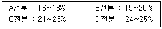
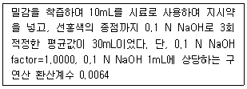
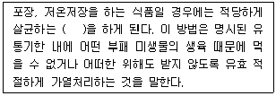
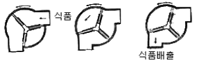

식품산업기사 (2013-03-10 기출문제)
1과목: 식품위생학
1. 병조림, 통조림의 보툴리누스(botulinus)균 처리에 가장 효과적인 살균법은?
- 증기소독법
- 자외선살균법
- 고압증기멸균법
- 건열살균법
(정답률: 93%)

2. Bacillus cereus 에 의한 식중독에 대한 설명은?
- pH5.7에서 생육 불가능하다.
- 원인물질은 enterotoxin이다.
- 독소는 복합단백질이다.
- 일반적인 가열조리에 의하여 실활되지 않는다.
(정답률: 49%)
3. Gram 음성의 무아포간균으로서 유당을 분해하여 산과 가스를 생산하며, 식품위생검사와 가장 밀접한 관계가 있는 것은?
- 대장군균
- 젖산균
- 초산균
- 발효균
(정답률: 92%)
4. 미생물학적 검사를 위한 검체는 반드시 무균적으로 행하여야하며 원칙적으로 몇℃이하로 유지시키면서 검사기관에 운반하여야 하는가?
- 5 ± 3℃ 이하
- 15 ± 3℃ 이하
- 25 ± 3℃ 이하
- 35 ± 3℃ 이하
(정답률: 72%)
5. 대장균군의 정성시험 순서가 바르게 된것은?
- 추정시험-확정시험-완전시험
- 추정시험-완전시험-확정시험
- 완전시험-확정시험-추정시험
- 완전시험-추정시험-확정시험
(정답률: 74%)
6. Clostridium botulinum의 특성이 아닌 것은?
- 통조림, 병조림 등의 밀봉식품의 부패에 주로 관여된 균이다.
- 그람양성 간균으로 내열성 아포를 형성한다.
- 치사율이 매우 높은 식중독균이다.
- 100℃, 30분 정도 살균하면 사멸된다.
(정답률: 75%)
7. Cl. perfringens에 의한 식중독과 관련한 설명 중 틀린 것은?
- 끓인 고기즙, 구운 고기, 가금육의 탕(stew) 등 단백질 고함량 식품이 주요 원인 식품이다.
- 식용할 당일에 가열 조리하거나 2회 연속 가열하는 것이 식중독 제어를 위해 바람직하다.
- 식중독 방지를 위하여 고기를 세절하는 것 보다 가능한한 큰 덩어리로 가열 조리하는 것이 유리하다.
- 서빙하기 전 재가열 시까지 반드시 냉장 보존하는 것이 바람직한 제어 방법이다.
(정답률: 77%)
8. 쥐와 관련되어 감염되는 질병이 아닌 것은?
- 유행성 출혈열
- 살모넬라증
- 페스트
- 폴리오
(정답률: 83%)
9. 식중독 원인물질이 같은 것끼리 연결된 것은?
- 복어-나팔고동
- 독꼬치-섭조개
- 돗돔-홍합
- 보라골뱅이-가리비
(정답률: 53%)
10. 건강기능식품 제조에 사용할 수 있는 원료는?
- 황백
- 인삼가수분해농축액
- 담즙·담낭
- 사람의 태반
(정답률: 88%)
11. 특히 변질되기 쉬운 식품의 전 유통과정을 각각 그 식품에 적합한 저온 조건으로 관리하는 체계는?
- 냉살균 유통
- 저온 유통
- CA 저장
- Aw 조절
(정답률: 75%)
12. 각 위생동물과 관련된 식품, 위해와의 연결이 틀린 것은?
- 진드기 : 설탕, 화학조미료-진드기뇨증
- 바퀴 : 냉동 건조된 곡류-디프테리아
- 쥐 : 저장식품 - 장티푸스
- 파리 : 조리식품-콜레라
(정답률: 83%)
13. DL-a-tocopherol은 어떤 용도로 사용되는 식품첨가물인가?
- 보존료
- 착색료
- 발색제
- 산화방지제
(정답률: 78%)
14. 식품용 금속성 용기의 위생문제에 대한 설명으로 틀린 것은?
- 통조림용 공관은 주로 주석 도금 철판을 사용하므로 주석이 식품 중에 용출될 수 있다.
- 통조림용 공관의 접합부를 납땜한 경우 납이 식품 중에 용출될 수 있다.
- 아연을 도금한 식기나 유해금속 색소를 쓴 식기가 위생상 문제가 될수 있다.
- 과즙을 넣은 통조림은 납과 주석 등의 용출이 문제 되지 않는다.
(정답률: 94%)
15. 식중독을 방지할 때 중요하지 않은 것은?
- 예방접종
- 냉장과 냉동
- 손의 청결
- 가열조리
(정답률: 91%)
16. 수인성 전염병의 특징이 아닌 것은?
- 단시간에 다수의 환자가 발생한다.
- 동일 수원의 급수지역에 환자가 편재된다.
- 잠복기가 비교적 짧다.
- 원인 제거시 발병이 종식될수 있다.
(정답률: 73%)
17. 식품등의 표시기준에 의거 한국인에게 알레르기를 유발하는 것으로 알려져 있는 원재료명이 아닌 것은?
- 메밀
- 보리
- 우유
- 밀
(정답률: 76%)
18. 참치통조림의 검사방법으로 부적절한 것은?
- phosphatase법
- 내압시험
- 외관검사
- 타검법(타관법)
(정답률: 83%)
19. 농약의 잔류성에 대한 설명으로 틀린 것은?
- 농약의 분해속도는 구성성분의 화학구조의 특성에 따라 각각 다르다.
- 잔류기간에 따라 비잔류성, 보통 잔류성, 잔류성, 영구 잔류성으로 구분한다.
- 유기염소계 농약은 잔류성이 있더라도 비교적 단기간에 분해·소멸된다.
- 중금속과 결합한 농약들은 중금속이 거의 영구적으로 분해되지 않아 영구잔류성으로 분류된다.
(정답률: 81%)
20. 다음 중 BHA, BHT는 어느 것에 속하는 첨가물인가?
- 보존료
- 착향료
- 산화방지제
- 품질개량제
(정답률: 74%)
2과목: 식품화학
21. 다음 프로비타민(provitamin) A 중에서 비타민 A의 효력이 제일 큰 것은 어느 것인가?
- cryptoxanthin
- α-carotene
- β-carotene
- r-carotene
(정답률: 78%)
22. 4가지 전분의 아밀로오스(amylose) 함량이 아래와 같을 때 노화가 가장 쉽게 발생되는 전분은 어느 것인가?

- A
- B
- C
- D
(정답률: 80%)
23. 쌀의 영양성분 함량이 탄수화물 80%, 단백질 9%, 지방 1%, 비타민B 12mg% 일 때 쌀 100g의 열량은 몇 칼로리인가? (단, 생리적 열량가로 계산하시오.)
- 360kcal
- 365kcal
- 4⑤kcal
- 410kcal
(정답률: 82%)
24. 다음 중 겔 상태의 식품이 아닌 것은?
- 된장국
- 묵
- 젤리
- 양갱
(정답률: 93%)
25. 전분을 산으로 가수분해 할때 나타나는 포도당의 중합물을 분자량 순으로 나열 한것은?
- 가용성 전분, 덱스트린, 올리고당, 맥아당, 포도당
- 가용성 전분, 올리고당, 맥아당, 덱스트린, 포도당
- 가용성 전분, 맥아당, 올리고당, 덱스트린, 포도당
- 가용성 전분, 올리고당, 덱스트린, 맥아당, 포도당
(정답률: 73%)
26. 지방의 자동산화에 가장 크게 영향을 주는 요인은?
- 효소
- 세균
- 습기
- 산소
(정답률: 80%)
27. 콜로이드 입자가 만드는 용액이 아닌 것은?
- 시럽
- 육수
- 우유
- 소스
(정답률: 49%)
28. 셀룰로오스(cellulose)를 가수분해하면 무엇이 생기는가?
- 맥아당
- 자당
- 포도당
- 전화당
(정답률: 72%)
29. 비효소적 갈변반응을 억제하는 방법이 아닌 것은?
- 산소제거
- 환원제 첨가
- 금속이온의 첨가
- 항산화제 첨가
(정답률: 70%)
30. 다음 식품 중 노화가 가장 늦게 일어나는 것은?
- 고구마
- 밀가루
- 감자
- 찰옥수수
(정답률: 70%)
31. 우유 단백질 중 치즈 제조에 사용되는 것은?
- 락토글로불린(lactoglobulin)
- 락토알부민(lactoalbumin)
- 카세인(casein)
- 글루텐(gluten)
(정답률: 89%)
32. 유화액의 형태에 영향을 주는 조건과 거리가 먼 것은?
- 유화제의 성질
- 물과 기름의 비율
- 물과 기름의 온도
- 물과 기름의 첨가 순서
(정답률: 63%)
33. 소수성 졸(sol)에 소량의 전해질을 넣을 때 콜로이드 입자가 침전되는 현상은?
- 브라운 운동
- 응결
- 흡착
- 유화
(정답률: 66%)
34. 다음 중 산성식품이 아닌 것은?
- 달걀
- 육류
- 어류
- 고구마
(정답률: 85%)
35. 머리카락, 발톱 및 손톱의 성장 기능에 필요한 영양소는?
- 단백질
- 무기질
- 지질
- 탄수화물
(정답률: 84%)
36. 글리세롤과 지방산으로부터 유지의 합성에 관여하는 반응은?
- 탈수반응
- 가수분해반응
- 산화환원반응
- 중화반응
(정답률: 25%)
37. 등전점이 pH10인 단백질에 대한 설명중 옳은것은?
- 구성 아미노산 중에 염기성 아미노산의 함량이 많다.
- 구성 아미노산 중에 산성 아미노산의 함량이 많다.
- 구성 아미노산 중에 중성 아미노산의 함량이 많다.
- 구성 아미노산 중에 염기성, 산성, 중성 아미노산의 함량이 같다.
(정답률: 78%)
38. 향기의 주성분이 황을 함유하는 식품은?
- 무
- 계피
- 커피
- 박하
(정답률: 72%)
39. 다음 중 나트륨의 기능이 아닌 것은?
- 체액의 산, 알칼리 평형 및 삼투압 조절
- 근육의 수축 및 신경 흥분 억제
- 담즙, 췌액, 장액 등의 알칼리성 소화액 성분
- 구리와 함께 뼈의 주요 구성 성분
(정답률: 71%)
40. 다음 중 황화알릴(allyl sulfide)의 냄새가 나는 식품은?
- 사과, 바나나
- 파
- 육계
- 부패계란
(정답률: 80%)
3과목: 식품가공학
41. 유지의 정제방법에 대한 설명 중 틀린 것은?
- 탈산은 중화에 의한다.
- 탈색은 가열 및 흡착에 의한다.
- 탈납은 가열에 의한다.
- 탈취는 감압하에서 의한다.
(정답률: 77%)
42. 식품포장재의 독성개념에 대한 설명으로 틀린 것은?
- 농약이나 중금속을 제외하고 0.1ppm이하의 포장재 성분의 차이는 안전한 것으로 본다.
- 주석캔 용기의 경우 side seaming시 납의 용출은 체중 kg당 50μg 이상이면 뇌, 정신질환에 영향을 줄 수 있다.
- 알루미늄은 산도가 높은 식품의 포장에 적합하다.
- 플라스틱 포장재는 물성을 조절하기 위하여 안정제, 산화방지제, 착색제, 가소제 등을 사용한다.
(정답률: 65%)
43. 간장이나 된장 코지 중 protease 활성이 가장 강한 것은?
- 장모균
- 단모균
- 주모균
- 나선균
(정답률: 45%)
44. 우수건강기능식품제조기준 및 품질관리기준을 준수하는 건강기능식품제조업소를 GMP적용업소로 지정하는 자는?
- 식품의약품안전청장
- 농림수산식품부장관
- 농촌진흥청장
- 한국식품연구원장
(정답률: 88%)
45. 식품 가공 및 저장이 산업 및 경제적인 측면에서의 필요성과 이익에 포함되지 않는 것은?
- 국민 건강을 증진시킨다.
- 생산과 분배가 원만하다.
- 유통과 적재가 유리하다.
- 농축수산물의 가격 안정에 기여한다.
(정답률: 72%)
46. 식품의 3차 기능인 생체조절기능에 포함되지 않는 것은?
- 욕구충족
- 신체리듬조절
- 노화억제
- 질병방지
(정답률: 69%)
47. 밀감에 들어 있는 총산의 양은 얼마인가?

- 1.25%
- 1.72%
- 1.85%
- 1.92%
(정답률: 37%)
48. 훈연 수산물 가공품 제조 시 사용되는 훈연재가 아닌 것은?
- 왕겨
- 소나무
- 떡갈나무
- 밤나무
(정답률: 62%)
49. 김치 Codex 규격(CODEX STAN223-2001)의 내용으로 틀린것은?
- 다양한 배추로 제조한다.
- 제품은 맵고 짠맛을 지녀야 하며, 신맛을 가질 수도 있다.
- 제품은 적당히 단단하고 아삭아삭하고 씹는 맛이 있어야 한다.
- 식품첨가물은 일체 허용하지 않는다.
(정답률: 86%)
50. 식용유지류로 이용되지 않는 것은?
- 미강유
- 면실유
- 어간유
- 대두유
(정답률: 57%)
51. 건강기능식품의 기능성 내용과 기능성 원료의 연결이 틀린 것은?
- 운동수행 능력 향상-프로폴리스추출물
- 충치발생위험 감소-자일리톨
- 항산화-비타민C(고시형 원료)
- 면역기능-L-글루타민(인정된 기능성 원료)
(정답률: 60%)
52. 프로바이오틱스(probiotics)에 대한 설명으로 틀린 것은?
- 대부분의 프로바이오틱스는 유산균들이며 균주에 의한 가스 발생 등으로 설사를 유발할 수 있다.
- 과량으로 섭취하면 heterofermentation을 하는 균주에 의한 가스발생 등으로 설사를 유발할 수 있다.
- 프로바이오틱스가 장 점막에서 생육하게 되면 장내의 환경을 중성으로 만들어 장의 기능을 향상시킨다.
- 프로바이오틱스가 장내에 도달하여 기능을 나타내려면 하루에 108~1010cfu 정도를 섭취하여야 한다.
(정답률: 63%)
53. 젤리(jelly)제품 150g 중에 pectin, 산, 당의 함량은? (단, 통상적인 수치의 표준제품일 경우로 계산한다.)
- 1.5~2.3g, 0.45g, 90g
- 2.3~3.2g, 0.6g, 1⑤g
- 0.5~1.3g, 0.35g, 75g
- 4~5.3g, 1.2g, 140g
(정답률: 62%)
54. 110~120℃ 정도의 온도에서 20~30분간 가열살균하는 레토르트식품의 살균방법은?
- 가압가열살균법
- 감압가열살균법
- 열탕살균법
- 원적외선가열살균법
(정답률: 59%)
55. 대두, 탈지대두 또는 곡류 등에 누룩균 등을 배양하여 식염수 등을 섞어 발효, 숙성시킨 후 그 여액을 가공한 것은?
- 혼합간장
- 효소분해간장
- 산분해간장
- 양조간장
(정답률: 54%)
56. 육질의 연화를 위한 숙성(aging, ripening)과정에서 일어나는 현상에 대한 설명으로 틀린 것은?
- pepsin, trypsin, cathepsin 등의 효소작용에 의한 단백질 가수분해작용이 일어난다.
- actomyosin의 해리현상이 일어난다.
- 혈색소인 hemoglobin이나 myoglobin은 Fe2+가 Fe3+로 된다.
- 숙성과정에서 도살전과 비교하여 pH의 변화는 없다.
(정답률: 84%)
57. 연제품 제조 시 색택 향상을 위해 사용하는 주요첨가물은?
- 삭카린나트륨
- 아스코르브산
- 중합인산염
- 아초산나트륨
(정답률: 62%)
58. 아이스크림믹스류의 유형이 아닌 것은?
- 저지방아이스크림믹스
- 아이스밀크믹스
- 샤베트믹스
- 조제아이스크림믹스
(정답률: 49%)
59. 소금을 뿌린 감자칩(salted potato chips)의 유통기한 설정을 하기 위해 위해요소중점관리기준(HACCP)원칙을 적용하고자 한다. 이때 중점관리기준(CCP)으로 고려의 대상이 될 수 없는 것은?
- 튀김 기름의 공급
- 튀김 기름의 산패
- 튀김 공정
- 포장의 밀폐상태
(정답률: 45%)
60. 유청(Whey)이 황록색을 띠는 것은 어느 비타민에 의한 것인가?
- 비타민 B1
- 비타민 B2
- 비타민 B6
- 비타민 B12
(정답률: 54%)
4과목: 식품미생물학
61. 젖산음료의 발효에 사용되지 않는 젖산균은?
- Lactobacillus bulgaricus
- Lactobacillus plantarum
- Streptococcus lactis
- Streptococcus thermophilus
(정답률: 44%)
62. 다음 통조림 중에서 가열살균 조건을 가장 완화(낮은 열처리)시켜도 되는 것은?
- 과일 통조림
- 어육 통조림
- 육류 통조림
- 채소류 통조림
(정답률: 61%)
63. Saccharomyces cerevisiae는 광범위한 발효작용을 하여 발효공업에 많이 쓰인다. 다음 당류 중 Saccharomyces cerevisiae로 발효시킬 수 없는 것은?
- 유당(lactose)
- 포도당(glucose)
- 맥아당(maltose)
- 설탕(sucrose)
(정답률: 57%)
64. 일반적으로 미생물이 가장 잘 이용할 수 있는 물질은?
- 젖당
- 설탕
- 녹말
- 포도당
(정답률: 78%)
65. 생선이나 수육이 변패할 대 인광을 나타내는 원인균은?
- Bacillus coagulans
- Salmonella enteritidis
- Vibrio indicus
- Erwinia carotovora
(정답률: 64%)
66. 담자균류 균사의 특징인 균반(또는 취상돌기, clamp connection)이 형성되는 시기는?
- 1차균사
- 2차균사
- 3차균사
- 4차균사
(정답률: 75%)
67. 치즈의 숙성, 항생물질 제조 등에 이용되며, 황변미 독소생성과 관계있는 미생물은?
- Rhiwopus 속
- Penicillium 속
- Aspergillus 속
- Mucor 속
(정답률: 70%)
68. 일반적으로 저온세균의 최적 생육온도는?
- 0℃
- 12~18℃
- 25~40℃
- 50~60℃
(정답률: 66%)
69. 포도당 500g을 초산발효시켜 얻을 수 있는 이론적인 최대 초산량은 약 얼마인가?
- 166.7g
- 333.3g
- 500g
- 652.1g
(정답률: 73%)
70. 전분(starch)에 존재하는 미생물을 감소시키는 수단이 아닌 것은?
- 소량의 액체염소에 의한 살균
- 100℃, 30분간 3일에 걸친 간헐살균
- 생전분에 차아염소산소다 첨가
- pH를 6~7로 조정
(정답률: 67%)
71. Gram 양성이 포자를 형성하는 편성혐기성균은?
- Bacillus 속
- Clostridium 속
- Escherichia 속
- Corynebacterium 속
(정답률: 73%)
72. Gram 음성의 간균이며 주로 단백질 식품의 부패에 관여하는 세균은?
- Aerobacter 속
- Bacillus 속
- Micrococcus 속
- Proteus 속
(정답률: 63%)
73. 간장의 제조공정에 사용되는 균주는?
- Aspergillus tamari
- Aspergillus sojae
- Aspergillus flavus
- Aspergillus glaucus
(정답률: 79%)
74. 초산 발효 중에 생성된 초산을 다시 물과 이산화탄소로 산화(과산화)하는 식초양조의 유해균으로 작용하는 초산균은?
- Acetobacter aceti
- Acetobacter vini acetati
- Acetobacter oxydans
- Acetobacter xylinum
(정답률: 20%)
75. 세균을 분류하는 기준으로 볼 수 없는 것은?
- 편모의 유무 및 착생부위
- 격벽(septum)의 유무
- 그람(Gram) 염색성
- 포자의 형성 유무
(정답률: 66%)
76. 폐수의 BOD를 저하시킬 수 있는 발효법은?
- Urises deMell법
- Hildebrandt-Erb법
- 고농도 술덧 발효법
- 연속 발효법
(정답률: 69%)
77. 아세트산발효에 대한 설명으로 옳은 것은?
- 에탄올을 만드는 에탄올발효도 아세트산발효에 포함된다.
- 발효에 이용하는 아세트산균은 그람양성, 편성혐기성의 간균이다.
- 여러 미생물이 혐기적으로 화합물로부터 아세트산을 만든다.
- 알코올로부터 산화적으로 아세트산이 생성되는 과정이다.
(정답률: 58%)
78. 냉동식품의 미생물 관리를 위해 유의할 점이 아닌 것은?
- 냉동전 주원료, 부원료 등의 세균학적 안전성을 확인한다.
- 종업원의 위생관리를 철저히 한다.
- 포장재료는 살균처리하지 않고 사용해도 무관하다.
- 환경위생설비를 충실히 한다.
(정답률: 91%)
79. 다음 중 페니실린(Penicillin)을 가장 잘 생성하는 균은?
- Penicillium glaucum
- Penicillium citrinum
- Penicillium chrysogenum
- Penicillium camemberti
(정답률: 51%)
80. 고정화 효소(immobilized enzyme)에 대한 설명으로 틀린 것은?
- 미생물 오염의 위험성이 감소한다.
- 안정성이 증가한다.
- 재사용이 가능하다.
- 반응의 연속화가 가능하다.
(정답률: 54%)
5과목: 식품제조공정
81. 원료를 일정한 속도로 이동 중이거나 교반 중일 때 물을 뿌려 가면서 세척하는 방법은?
- 침지세척
- 마찰세척
- 분무세척
- 부유세척
(정답률: 90%)
82. 살균온도는 121℃로 일정하고 생균수가 103일때의 살균시간이 2분, 102일때의 살균시간이 7분이라 한다면 D값은 얼마인가?
- 4
- 5
- 6
- 7
(정답률: 70%)
83. 다음 중 농축 공정 중 발생하는 현상과 거리가 먼 것은?
- 점도상승
- 거품발생
- 비점하강
- 관석(scaling) 발생
(정답률: 72%)
84. 다음 중 에멀션의 형태가 나머지와 다른 것은?
- 버터
- 마요네즈
- 두유
- 우유
(정답률: 81%)
85. 분획 증류에 대한 설명으로 틀린 것은?
- 과즙과 같은 식품에 사용된다.
- 향기성분이 쉽게 휘산된다.
- 비점을 낮출 수 있다.
- 성분 열변성을 방지한다.
(정답률: 46%)
86. 다음 중 가장 입자가 작은 가루는?
- 10메시 체를 통과한 가루
- 30메시 체를 통과한 가루
- 50메시 체를 통과한 가루
- 100메시 체를 통과한 가루
(정답률: 77%)
87. 다음 ( )에 들어갈 알맞은 용어는?

- 상업적 살균
- 멸균
- 공업적 살균
- 적정 살균
(정답률: 82%)
88. 다음 중 침강분리의 원리가 아닌 것은?
- 중력
- 부력
- 항력
- 장력
(정답률: 62%)
89. 원심분리를 이용하여 액체와 고체를 분리하려고 할 때 고체의 농도가 높을 경우 사용하는 원심분리기로 적합한 것은?
- 디슬러지 원심분리기
- 관형 원심분리기
- 원통형 원심분리기
- 노즐 배출형 원심분리기
(정답률: 49%)
90. 건조조에 의한 건조법에 사용하 건조제로 적합하지 않은 것은?
- 무수 염화칼슘
- 오산화인
- 실리카겔
- 염산
(정답률: 82%)
91. 병류식 터널건조기의 장점이 아닌 것은?
- 초기 건조 속도가 빠르다.
- 식품의 수축이 적다.
- 오염의 위험이 적다.
- 최종 수분 함량이 낮은 제품을 얻을 수 있다.
(정답률: 59%)
92. 조분쇄에 쓰이는 분쇄기가 아닌 것은?
- jaw crusher
- hammer mill
- gyratory crusher
- single roll crusher
(정답률: 61%)
93. 제품을 일정량식 포장하기 위하여 아래 그림과 같은 충진기를 이용하는 식품으로 적합한 것은?

- 우유
- 고추장
- 밀가루
- 완두콩
(정답률: 61%)
94. 건량기준(dry basis) 수분함량 25%인 식품의 습량기준(wet basis) 수분함량은?
- 20%
- 25%
- 30%
- 18%
(정답률: 69%)
95. 분자크기가 10~100Å의 미세한 구멍의 여과막을 통하여 물, 염류, 설탕 같은 저분자 물질은 투과시키지만 단백질과 같은 고분자 물질은 투과하지 못하는 여과법은?
- 한외 여과법
- 정밀 여과법
- 역삼투법
- 투석법
(정답률: 46%)
96. 초임계 유체의 설명으로 틀린 것은?
- 초임계 유체의 점도는 일정한 온도에서 압력 변화에 민감하다.
- 초임계 유체의 확산도는 압력이 높아질수록 증가한다.
- 초임계 유체의 용해도는 압력이 높아질수록 증가한다.
- 임계점(critical point) 이상의 온도와 압력에서의 유체 상태를 초임계 유체라고 한다.
(정답률: 56%)
97. 과립성형 방법으로 제조되는 제품이 아닌 것은?
- 분말 주스
- 빵이스트
- 인스턴트 커피분말
- 비스킷
(정답률: 83%)
98. 수분이 많은 육류를 절단 마쇄하는데 적합한 분쇄기는?
- 초퍼
- 펄퍼
- 볼 밀
- 디스크 밀
(정답률: 67%)
99. 연속식 살균장치가 아닌 것은?
- 레토르트 살균기
- 하이드로록 살균기
- 회전식 살균기
- 수탑식 살균기
(정답률: 71%)
100. 다음 중 건조한 상태에서 세척하는 방법이 아닌 것은?
- 초음파세척
- 마찰세척
- 흡인세척
- 자석세척
(정답률: 75%)